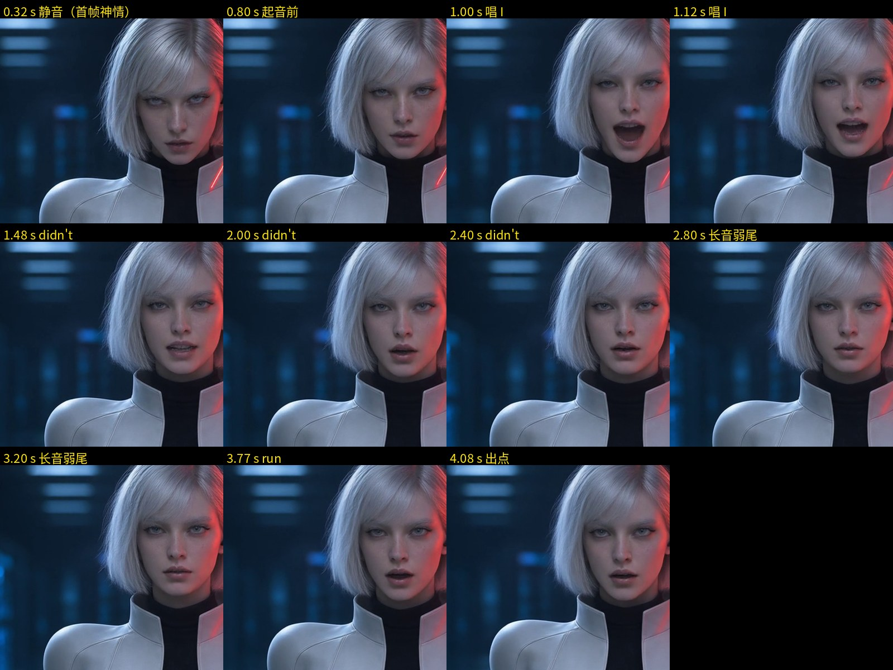
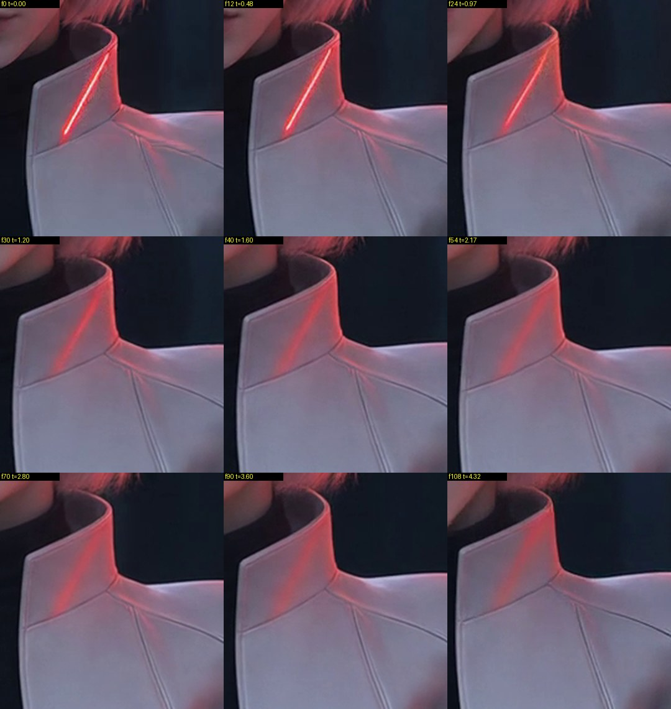
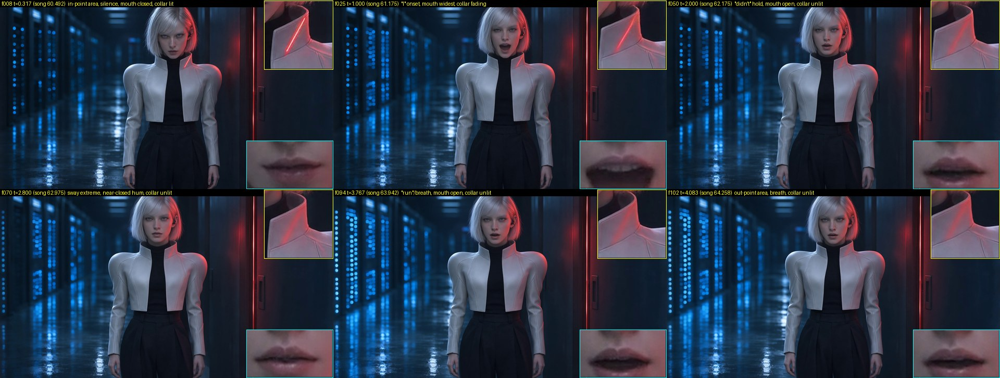

唯一不过的是身份：左立领的红色指示灯线 0–0.97 s 是亮线，1.12 s 起熄灭，只剩模糊的红色反光，一直到片尾。canon v4：只有 IRIS 的领线亮着，副本是熄灭的。其余各项全部 PASS。



| 项目 | 结论 | 要点 |
|---|---|---|
| 在唱（口型） | PASS | 每个唱词都有嘴部动作；值得用眼看的是 2.57–3.52 s 近乎静止的一段（长音弱尾），以及 run 张口晚约 0.15–0.2 s |
| 身份 | FAIL | 眉睫、眼色、雀斑、耳挂在右侧都对；立领红线 1.12 s 起熄灭 |
| 畸变（手、牙） | PASS | 手指完整，牙齿正常 |
| 机位与背景 | PASS | 机位锁定，无硬切，门缝不变，红光只在门缝一侧 |
| 表演 | PASS | 不皱眉，不夸张；有重心摆动和换气，没有后仰后退 |
| 平台标签 | PASS | 画面无可见标签 |
| 音轨 | PASS | 与上传人声相差 25 ms（小于 1 帧） |
| 可用区间 | 0.325–4.085 s | 正好覆盖剪辑窗口 60.50–64.26 s；领线问题解决前不能用 |